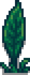
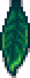
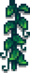
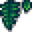
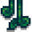
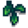

Luau
The Luau is a Festival that takes place on the 11th of every Summer. The player attends the Luau by entering The Beach between 9am and 2pm. The beach cannot be entered before 9am. When the Luau ends, the player will be returned to The Farm at 10pm.
On the day of the Festival, every home and shop in Stardew Valley is "locked" and cannot be entered. This does not apply to the Oasis, which is open as normal.
A central feature of the Luau is the communal potluck soup, made with ingredients added by villagers. The player may choose to add an ingredient to the soup, then the Governor tastes and judges it. The soup-tasting begins by talking to Mayor Lewis and choosing "yes, let's start," at the dialogue option.
The reaction of the Governor at the soup tasting depends upon what item the player has added to it, if any. Friendship points with most villagers will also increase, decrease, or not change, depending on the item added to the soup. Friendships with Sandy, the Wizard, Krobus, the player's Children, and the Dwarf are never affected.
The Luau ends automatically after the Governor tastes the soup.
Shop
Pierre has a booth from which he sells the following items.
| Image | Name | Description | Price |
|---|---|---|---|
| Wall Palm | Can be placed inside your house. | ||
   |
Jungle Decal | Can be placed inside your house. | |
   |
Ceiling Leaves | Can be placed inside your house. | |
| Totem Pole | Can be placed as decoration. | ||
| Starfruit (1) | An extremely juicy fruit that grows in hot, humid weather. Slightly sweet with a sour undertone. | ||
| Plain Torch | Can be placed as decoration. |
Potluck
When adding an item to the potluck soup, only edible, uncooked items are valid (although Life Elixir and Oil of Garlic are crafted and not cooked, the game considers them "cooked" items, so they are not eligible. Magic Rock Candy and Piña Colada are considered "cooked" items as well, so they are not eligible. Field Snack and Bug Steak, however, are eligible). Note that the game does not inform the player before the event that the "potluck" is a soup, nor that cooked or inedible items are not valid.
Before the soup-tasting, Mayor Lewis states, "I trust that you all put high-quality ingredients in the pot this year. We don't want the governor to regret his visit to the valley!" At this point it is too late for the player to change the item already added to the soup.
Note that item quality, base sell price, and edibility (healing effect) are the three determining factors of the Governor's reaction. Profession bonuses that increase the sell price of items (such as Rancher, Angler, etc.) are not considered in the game's calculations.[1]
There are 7 possible outcomes depending on the item added to the soup.
In a multiplayer game, all players must add an item to the soup, or the "Missing Something" response will occur. Following that, the final result is determined by the worst item added.
Missing Something Response
| “ | “Hmmm... Well it's not bad, but it's missing something... Did everyone in town contribute an ingredient to the soup? I feel like it's missing someone's unique voice.” |
| — Governor |
The player neither earns nor loses friendship with the villagers if no item is used.
Best Response
| “ | “Oh my... that's the best soup I've ever tasted!” |
| — Governor |
The player earns 120 friendship points with the villagers if any of these items are used.
*For items that are available in gold and iridium qualities, either may be used.
Good Response
| “ | “Ah... that's a very pleasant soup. The produce from this valley never disappoints!” |
| — Governor |
The player earns 60 friendship points with the villagers if any of these items are used.
*For items that are available in gold and iridium qualities, either may be used.
Neutral Response
| “ | “Hmm... I don't have much to say about this. It's an average soup.” |
| — Governor |
The player neither earns nor loses friendship with the villagers if any of these items are used.
*Any available quality (silver, gold, or iridium) of these items will produce the Neutral Response.
Bad Response
| “ | “Um... It's actually kind of disgusting. I think I'll pass on the soup this year.” |
| — Governor |
The player loses 50 friendship points with the villagers if any of these items are used.
| Quality | Eligible Items |
|---|---|
| Any | Anchovy • Blackberry • Carp • Crocus • Daffodil • Dried Qi Fruits • Field Snack • Green Algae • Herring • Joja Cola • Qi Fruit • Qi Fruit Jelly • Qi Fruit Wine • Salmonberry • Salmonberry Wine • Seaweed • Spring Onion • Spring Onion Juice • Sunfish • Sweet Pea • Unmilled Rice • Unmilled Rice Juice • White Algae |
Worst Response
| “ | “Blech! This is vile! I think I'm going to be sick...
I need to lie down...” |
| — Governor |
The Governor passes out and the player loses 100 friendship points with the villagers if any of these items are used.
| Quality | Eligible Items |
|---|---|
| Any | Goby • Holly • Pufferfish • Red Mushroom • Sap • Scorpion Carp • Sea Cucumber • Smoked Goby • Smoked Pufferfish • Smoked Scorpion Carp • Smoked Sea Cucumber • Void Egg • Void Mayonnaise |
Secret Response
| Quote | |||
|
Adding Mayor Lewis' Lucky Purple Shorts to the soup will result in a unique response from the Governor and Lewis. Friendship with villagers is not affected in this scenario. If any player in a multiplayer game adds the shorts to the soup, the result will be the secret response, no matter what else is added.
Gallery
References
- ↑ See StardewValley.Event::governorTaste in the game code.
History
- 1.2.31: Fixed grammar in Luau community soup text.
- 1.3.27: All players in a multiplayer game can contribute to the soup. Mayor Lewis' shorts can be added to the soup.
- 1.3.28: Fixed music not playing at the Luau festival.
- 1.4: Fixed bug where NPCs would follow non-festival schedules after the festival.
- 1.5: Added Pierre's booth. Fixed bug where a staircase could be added to the soup.
- 1.6: New items (including Mayonnaise, Jelly, and Pickles) can be added to the soup. The Luau's layout now changes every second year.
- 1.6.2: Wine and Juice have scaling edibility, changing some items' responses when added to the soup. Void Eggs are now poisonous, so they give the worst potluck response.
| Festivals | |
|---|---|
| Spring | Egg Festival • Desert Festival • Flower Dance |
| Summer | Luau • Trout Derby • Dance of the Moonlight Jellies |
| Fall | Stardew Valley Fair • Spirit's Eve |
| Winter | Festival of Ice • SquidFest • Night Market • Feast of the Winter Star |